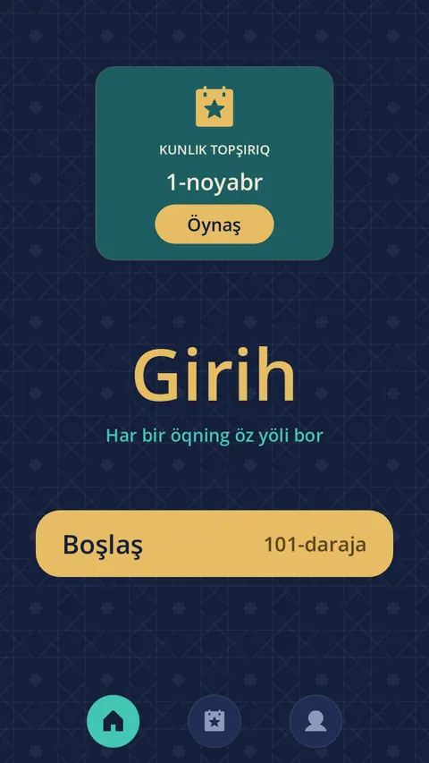
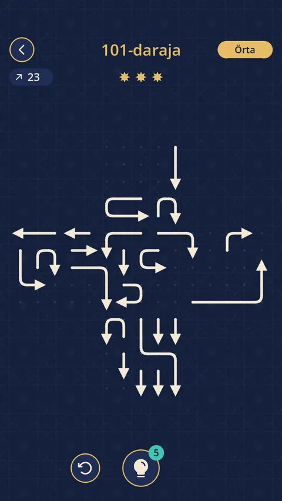
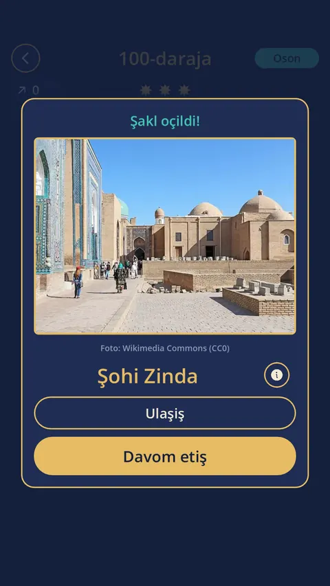
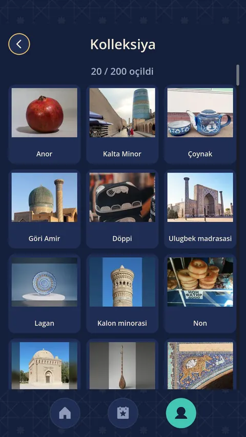

Android · Yopiq test
Girih
O‘zbek naqshi uslubidagi o‘q jumbog‘i: 1000 ta daraja va O‘zbekistonning 200 ta obidasi.
Tez kunda Google Play’da
Maxfiylik siyosati ↗
Google Play havolasi ilova chiqqanda shu yerda bo‘ladi.

Har bir o‘q o‘zi ko‘rsatgan tomonga uchib chiqadi — agar yo‘lida hech narsa bo‘lmasa. To‘g‘ri tartibni toping, maydonni tozalang va o‘qlar ichidan Registon, Kalta Minor, Shohi Zinda kabi obidalar paydo bo‘ladi. Internetsiz ishlaydi va arzon telefonlarda ham yengil.
Skrinshotlar





Imkoniyatlar
- 1000 ta daraja — osondan qiyinga
- 200 ta obida: rasm va qisqa hikoya
- Kunlik vazifa va 16 ta yutuq
- Internetsiz ishlaydi, taymer yo‘q
Texnologiyalar
- Godot 4
- GDScript
- Android
- Firebase
- AdMob
- Play Billing